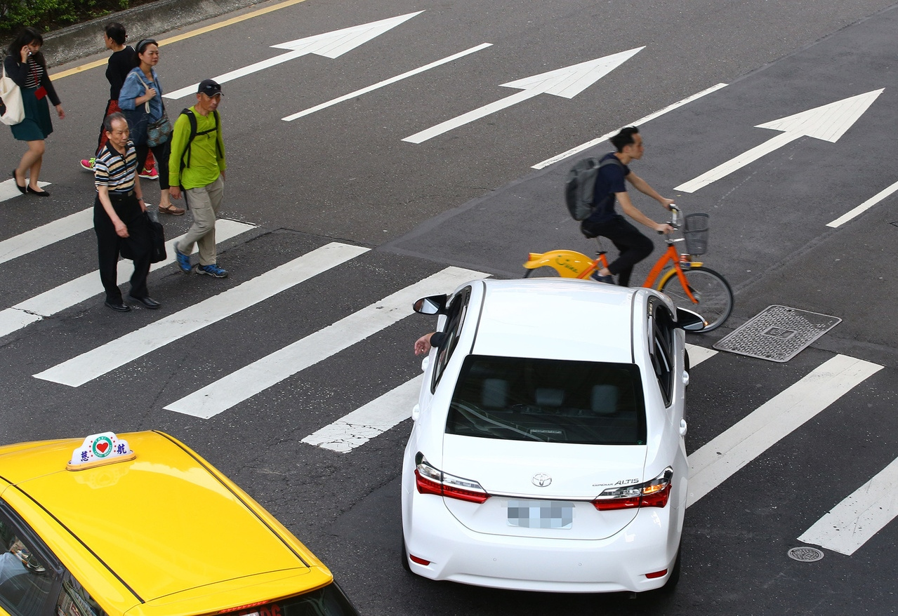
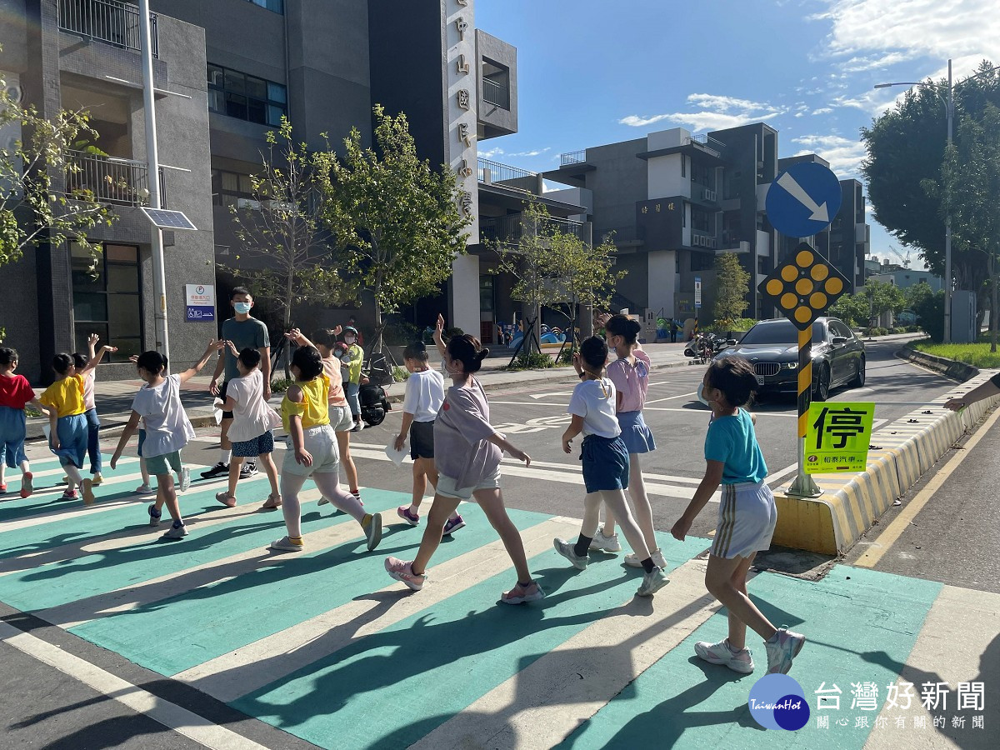
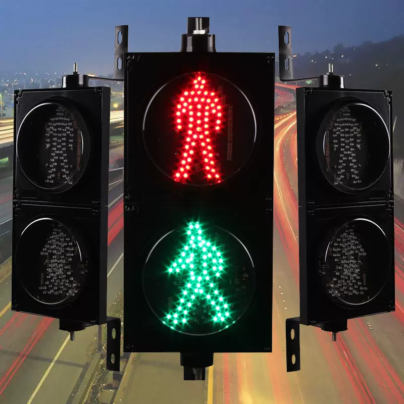

-
核心問題
日本媒體曾對國民發出警告，指台灣雖安全，但有三種特有的危險情境，其中之一即是馬路如虎口，日本少見的跨線超車、狂按喇叭、龜速或超速行駛， 在台灣都是家常便飯 。日本作家、資深媒體人野島剛寫了篇文章，指「台灣的道路狀況，簡直跟戰場無異」。 然而，就如黑格爾所說:「人類歷史中唯一學到 的教訓，就是沒有從歷史中學到任何教訓」， 野島的逆耳忠言，對台灣沒有起到警醒作用。
-
解決方案
台灣每年因交通事故致死人數，攀上五年新高，不僅許多家庭破碎，也耗損相當於三%GDP的生產力。這場人與車的戰爭，我們該如何搶回輪下亡魂？ 改善交安，七成和教育有關。要改善交通分為三個階段，一是「外科手術」階段，發生車禍後進行事故鑑定，解決車禍本身； 第二階段就是將過去 發生的事故整理出共同趨勢，找出可能發生原因，第三階段即是找出病因， 也就是目前全世界都在推動，「須從文化根源著手，包括國人對交通安 全的價值觀、態度和作為，都要重新扎根。」
-
參考實例
瑞典政府長年以「零死亡願景」出發，無論是道路及法規的設計、對駕駛人的規範、對用路人的保障與保護、乃至於交通科技，均奠基於此邏輯之上， 「一個都不能死」，在道路上死一個人都太多，這樣的概念大抵解釋了瑞典政府在1997年通過的「交通零死亡願景」。為了達成交 通零死亡、無重傷的目標，「零死亡願景」包括3個大原則：
1.道路安全的最終責任在於交通運輸系統設計。
2.用路人在交通中有責任遵守交通規則。
3.利用運輸系統設計，避免人員傷亡。
- 
- 
- 